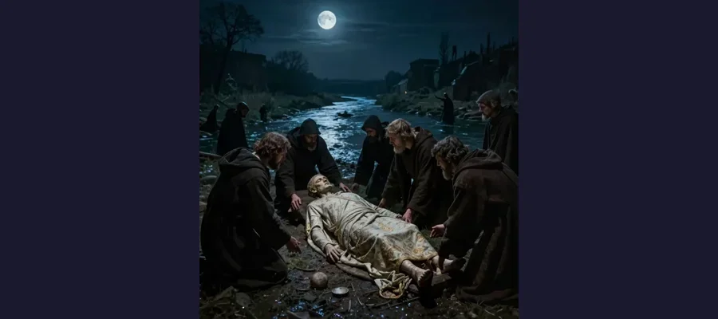

The Cadaver Synod

The bizarre Cadaver Synod - a dead pope put on trial!
In the year 897 CE, one of the strangest trials in human history took place in Rome. Pope Stephen VI put his predecessor, Pope Formosus, on trial. The twist? Formosus had been dead for months!
But here's the mystery: what could drive someone to put a corpse on trial? And how did this macabre event shape the future of the Catholic Church?
Overview
The Strange Trial
Pope Stephen VI was furious at his predecessor, Pope Formosus. But Formosus had been dead for seven months! That didn't stop Stephen - he had the corpse dug up from its grave and brought into the courtroom.
The dead pope was dressed in papal robes and propped up on a throne. A deacon was appointed to speak for the silent defendant. Then the trial began!
💀 The Defendant
Formosus's body had been buried for seven months, so it was badly decayed. Stephen didn't care - the show trial had to go on!
Why Put a Corpse on Trial?
The surreal scene of a dead pope being tried in a medieval courtroom.
The trial was really about politics and revenge. Pope Formosus had made enemies during his reign by supporting different factions in the church. When Stephen VI became pope, he wanted to destroy Formosus's legacy.
The charges? Formosus was accused of violating church laws, including moving from one bishopric to another - something that was technically forbidden at the time.
⚖️ The Verdict
Surprise, surprise - the dead pope was found guilty! His body was stripped of papal robes, and three fingers were cut off (the ones used for blessings).
Evidence
Historical work on The Cadaver Synod is strongest when primary records, material traces, and later peer-reviewed analysis point in the same direction. This layered approach helps separate observations from retellings and reduces the risk of repeating popular but unsupported claims.
The Mystery Deepens
Later popes reversed the verdict against Formosus. His body was recovered from the river and given a proper burial. But the Cadaver Synod left a dark stain on church history.
What drove Stephen VI to such extremes? Some historians believe he was pushed by powerful families who wanted to destroy Formosus's allies. Others think Stephen may have been mentally unstable.
🔮 Divine Judgment?
Some medieval people believed Stephen's violent death was divine punishment for his treatment of Formosus's corpse!
Competing Explanations
Competing explanations usually persist because each one fits part of the evidence while missing another part. Researchers test these models against chronology, physical constraints, and independent documentation to identify which interpretation requires the fewest assumptions.
Why Put a Corpse on Trial?
The surreal scene of a dead pope being tried in a medieval courtroom.
The trial was really about politics and revenge. Pope Formosus had made enemies during his reign by supporting different factions in the church. When Stephen VI became pope, he wanted to destroy Formosus's legacy.
The charges? Formosus was accused of violating church laws, including moving from one bishopric to another - something that was technically forbidden at the time.
⚖️ The Verdict
Surprise, surprise - the dead pope was found guilty! His body was stripped of papal robes, and three fingers were cut off (the ones used for blessings).
Open Questions
Open questions remain because source quality is uneven across time: some records are direct and detailed, while others are fragmentary or second-hand. Future archival discoveries, improved imaging, and more precise dating methods may refine conclusions without overturning well-supported core findings.
The Aftermath

Medieval Rome was a place of constant political intrigue and power struggles.
After the guilty verdict, Formosus's body was thrown into the Tiber River. But that wasn't the end of the story!
The Cadaver Synod shocked even medieval Romans, who were used to violence and political drama. Public opinion turned against Stephen VI. Within months, he was thrown into prison and was later strangled to death!
Legacy of the Cadaver Synod
- Political chaos: This event showed how divided and corrupt the church had become
- Later reforms: The scandal eventually led to efforts to clean up church politics
- Historical curiosity: The Cadaver Synod remains one of the most bizarre events in religious history
The Cadaver Synod remains a dark reminder of how political power struggles can lead to the most bizarre and macabre events!
References & Further Reading
Editorial note: We cross-check claims across multiple independent sources. See our Editorial Policy.